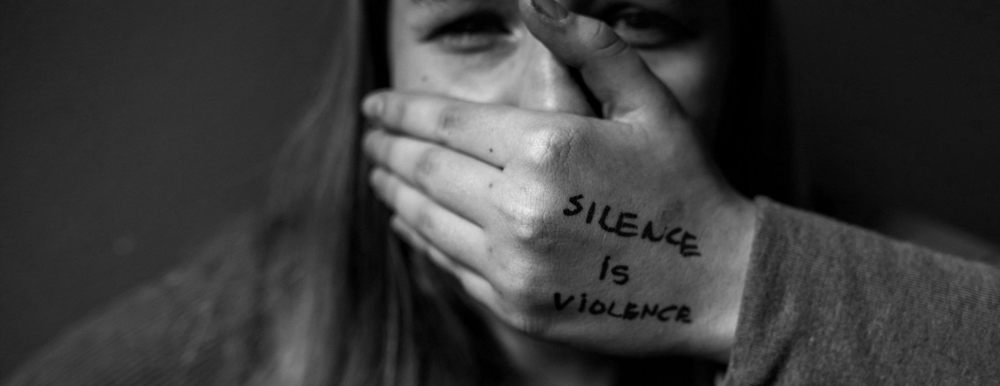

Llevó a una joven llena de energía a mantener sentada en una esquina, siendo consumida por el desespero. Todo seguía en un rumbo natural, una pequeña niña formaba parte de una familia, donde un día observó a su madre cansada, ella, le ofrece ayuda en la cocina, sin tener conocimiento alguno de esto, deja caer algo; su madre, en caso de entenderla, decidió recitarle unas palabras, las cuales no fueron lo adecuadas para esta situación. A lo largo de los años, pudo ver a su padre desesperado por un conflicto, acercándose a él para poder ayudarlo a solucionar sus problemas, pero el con una actitud no muy buena, se dirige de mala gana a ella, diciéndole que no tiene conocimiento sobre lo que pasa. La infancia, se ha vuelto un recuerdo que al fin y al cabo con el paso de tiempo esta triste niña, será de todo menos cuerdo. Llegó su adolescencia, pero cada vez, su mundo empeoraba; en su día a día ella se lastimaba por ecos del pasado que retumban en su cabeza; ella, se dispone a realizar todo lo pendiente, teniendo en cuenta, que en su momento, quería algo de comer, su refresco se derrama, su cuerpo estremece y su sangre hierve, pierde el control, se llena de rabia y comienza a darse golpes en su cabeza mientras frases dichas en el pasado recitan en ella; pasando los días, frente a situaciones agobiantes que no dejan que ella se sienta bien, volviendo a decirse así misma "¿Qué puedo hacer si no puedo hacer nada?" Con un desespero, se apoya en la pared y cae por la misma, agarrando sus cabello con sus manos llena de ira. ¿Qué hubiese sucedido si todo era diferente? Algo mejor habría pasado, es seguro.
¿Cómo sería el mundo si todos nos quedásemos callados de manera forzada solo porque la otra persona no quiere escuchar?
Puede que no todos en la sociedad lo estén experimentando pero una parte fundamental sufre esto de manera constante, los llamados
futuro de la sociedad son arrastrados al silencio pues no siempre son tomados en cuenta a la hora de opinar y para esto existen miles de pretextos “Eres demasiado jóven”
“No sabes nada de la vida” entre otros pero tengamos en cuenta que no siempre seremos jóvenes y un día si no cambiamos esta mentalidad seremos los mayores que acaben con los sueños de nuestros sucesores,
no sabemos nada de la vida… y es por esto que debemos opinar y preguntar y el hecho de callarnos lo único que hace es que perdamos la motivación, de que sirve opinar si nunca seremos escuchados…
tal vez si le hablo a la pared en algún punto tome
en cuenta mis opiniones y aplaste a todo aquel que se atreva a dañar la esperanza de la juventud.
En la mayoría de los casos, las personas pasan por periodos de su vida que los marcan para siempre, éstas pueden ser situaciones positivas o no. Generalmente estos periodos que quedan en nosotros suceden en la adolescencia,
tiempo en el que somos mas sensibles y en donde tenemos mas cambios… Es en donde experimentamos quienes somos, nuestros gustos, a donde queremos llegar y las personas que queremos que nos
acompañen en nuestro viaje. A su vez,
es en esta edad,
en donde los padres y los hijos no tienen una
buena comunicación y las diferencias de pensamientos hacen muchas palabras o acciones que se quedan con nosotros y hacen que cambiemos quienes somos… Por esto ten
cuidado y mide cada gesto o palabra que puedas dirigir hacia otra persona, no sabemos el impacto que en ella pueda tener o la marca intachable que le puedas dejar para su vida.
Nada ni nadie debe de permitir callar las ideas, expresiones o palabras de los demás, y es por esto por lo que pasan muchos jóvenes hoy en día , se privan de decir grandiosas ideas por
el que dirán, pero este miedo nace desde casa, desde los padres, estos son los encargados de generar esto en sus hijos, sea consciente o inconscientemente, como bien se dice los niños y adolescentes
son el futuro, pero en sí, cada adulto/padre es el presente
de cada uno de estos y quiénes los preparan para futuro “adecuado”, cada adulto es el responsable de futuros comportamientos, enseñanzas y tratos que un niño o adolescente tenga en la sociedad, se les debe prestar más atención a sus acciones y preguntas,
no cerrarles las ideas a nuevos cambios y posibilidades.Y mucho menos pensar que es atrevido o grosero decir lo que piensan. Porque esto traerá graves consecuencias de las cuáles los padres mismos son los que se quejan.
Finalmente llega un día donde todo nos empieza a consumir, donde tratamos de avanzar y mirar hacia adelante ignorando todas esas palabras, todas esas situaciones que al pasar los años vimos como insignificantes, ignorando el hecho de sentirnos insuficientes para la sociedad por ser jóvenes, por no tener un conocimiento tan amplio como lo pueden tener nuestros padres solo por el hecho de ser más “grandes” o por “tener más experiencia en la vida”.
Y ese día las palabras necias alguna vez escuchadas, nos intentan arrastrar para evitar que salgamos de este vacío en el que caímos, quizás sin darnos cuenta, quizás siendo conscientes de ello, en cualquier caso, sin la fuerza de voluntad necesaria, sin el apoyo de quienes se supone son nuestro ejemplo, con el estigma de ser la “generación de cristal”, con las miradas que juzgan, es fácil sumirse y dejarse caer en una oscuridad que fue creciendo con el pasar de los tiempos y que tal vez la unica solución sería mirar hacia arriba y seguir luchando por uno mismo sin dejar apagar esa luz interior que nos mantuvo vivos día tras día.
No siempre lo que demostramos por fuera es lo que en verdad ocurre en nuestro interior. Si le preguntaras a cualquier persona a su alrededor sobre ella te contestaria que es una persona muy feliz, que siempre se muestra positiva y alegra con esa sonrisa permanente en su rostro, nadie podría decirte cosas negativas sobre la actitud de ella pero lo que en verdad pasa es que ella internamente se siente casada, se encuentra harta al punto de desvanecerse en las lagrimas de tristeza que guarda cada día; te preguntaras porque, la respuesta es mas sencilla de lo que crees e incluso puede que la hallas visto no solo en el entorno de ella sino que también puede pasar a tu lado y es que ella siempre escucha palabras de sus padres que aseguran es para reforzar o corregir, “es tu obligación” “eres una molestia, cambia de una vez” “en verdad te gusta esto, es horrible” esas simples palabras como dicen, en verdad destruyen a esta chica de la peor manera causándole miedo e inseguridad. A pesar de que no lo demuestra ella guarda en su tranquilidad externa un caos interno
No existe ser que pueda amar más a otra persona que una madrea su hijo y un hijo a su madre.
La relación entre estos dos seres es fundamental para la vida de cualquiera, no habrá persona que
este más dispuesta a dar todo que alguna de estas dos personas por la otra y al ser un vinculo tan grande e
importante, a su vez se puede a desviar y hacerse daño entre sí.
Por esta razón, debemos ser conscientes de la confianza que nos dan las personas, más que todo los adultos hacia los jóvenes, en particular las madres a sus hijos…
El ser jóvenes no es sinónimo de inferioridad o asuntos
que no tienen relevancia, seamos sensibles frente a lo que los jóvenes tienen para contarnos y no creamos que los adultos son superiores solo
por llevarles una pequeña ventaja en la vida.
Hoy en día a pesar de las constantes charlas por parte de la sociedad sobre el suicidio y la depresión, no entendemos y prestamos la atención necesaria a esta problemática y su trasfondo; solo vemos el exterior diciendo que una persona con una sonrisa permanente en el rostro no es alguien que guarde dolor y contenga las lagrimas y aun si vemos detenidamente a las personas que muestran signos de tristeza solo compartimos breves y vacías charlas que siempre se rigen por un protocolo, cuando debemos no solo preguntar sino actuar, ayudar y como se dice comúnmente ponernos en los zapatos del otro.
Muchos jóvenes hoy en día se ahogan tratando de contener y soportar la presión que se le es puesta por los adultos, tristemente la sociedad no presta la mejor atención a los jóvenes quienes siempre llaman bajo el titulo “el futuro del pais” dejándolos a la deriva de los mandatos e incluso golpes por parte de sus padres que lanzan con la excusa “es para una mejor crianza y enseñanza”; debemos prestarle mejor
atención y no solo detener sus acciones y lanzar palabras sin sentido, parar de decir que no aprecian la vida o solo es una decisión cobarde.